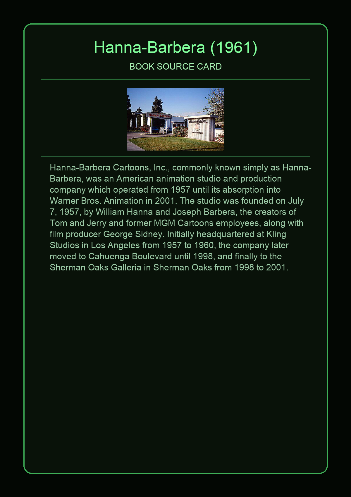
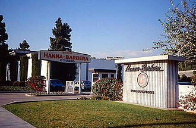

Hanna-Barbera Cartoons, Inc., commonly known simply as Hanna-Barbera, was an American animation studio and production company which operated from 1957 until its absorption into Warner Bros. Animation in 2001. The studio was founded on July 7, 1957, by William Hanna and Joseph Barbera, the creators of Tom and Jerry and former MGM Cartoons employees, along with film producer George Sidney. Initially headquartered at Kling Studios in Los Angeles from 1957 to 1960, the company later moved to Cahuenga Boulevard until 1998, and finally to the Sherman Oaks Galleria in Sherman Oaks from 1998 to 2001.
This page aggregates references to the source material behind Name Lore entries.